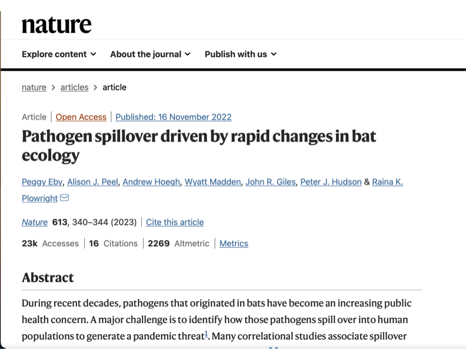
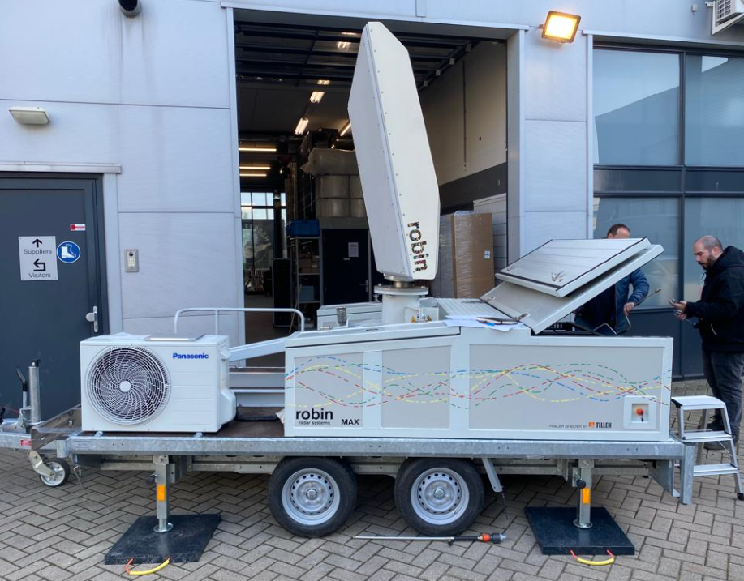

Particle filtering methods for animal movement modeling
Andy Hoegh
Particle filtering methods for animal movement modeling

PRESENTATION OVERVIEW
Presentation Overview
A little about me…
Collaborative research projects that motivated this work
Animal movement model primer
Agent-Based Models with SMC
My Research Philosophy
“The best thing about being a statistician is that you get to play in everyone’s backyard.” - John Tukey
“Problem first, not solution backward” - Jeff Leek

Understand and report uncertainty
Create software for implementation
Griffith University
- Visiting Research Fellow in the Centre for Planetary Health and Food Security
Montana State University
- Associate Professor of Statistics

Montana State University
- Associate Professor of Statistics (on sabbatical)

MOTIVATING PROJECTS: Grizzly Bears
Grizzly Bear Range in GYE

Greater Yellowstone Ecosystem

Greater Yellowstone Ecosystem
Grand Teton NP
Research Problem: Expanding Grizzly Range

Research Problem
- Use historical telemetric data from individual grizzly bears to understand and model population dynamics and predict when/where grizzly bears will be.
- Grizzly bears establish a home range and can be territorial.
- Range expansion is typically a product of males (young or old) searching for their own home range after being forced out.
MOTIVATING PROJECTS: Flying Foxes
Flying Foxes

Hendra Virus Spillover

Hendra Virus Spillover

Flying Fox Behavior

Research Problem
- Hendra virus spillover is most likely during periods with low natural food availability.
- Spillover risk influenced by bat-horse interface and potentially exacerbated by higher viral shedding levels due to poor nutrition.
- Use radar, across wide spectrum of food availability, to understand bat movement behavior and how it relates to the spillover risk of Hendra virus.
Radar Data

ANIMAL MOVEMENT MODELS
Positional Data to Movement Modeling

Animal Movement Models
- Step Length: is a distribution for distance traveled in a specific period
- Angular Direction:
Data Model
\[\underline{z}_{t} = H_t \underline{s}_{t} + \underline{\epsilon}_t, \; \; \;\;\;\; \underline{\epsilon}_t \sim N(0,\sigma^2_{\epsilon} I)\] where \(\underline{z}_t\) is a matrix of the observed locations for the agents at time t, \(H_t\) is an incidence matrix to determine whether an agent is observed at time t, \(\underline{s}_t\) is the latent location at time, and \(\epsilon_t\) is the error process
- This model can be formulated as a state-space model (of HMM)
Process Model
\[\underline{s}_{i,t} = \underline{s}_{i,t-1} + u_{i,t}\underline{\delta}_{i,t} + \underline{\eta}_{i,t}\]
- \(u_{i,t}\) represents the speed
- \(\underline{\delta}_{i,t}\) is a unit vector for the directional component of the velocity
Angular Heading
\[\left(\delta_{x,i,t}, \delta_{y,i,t}\right)' = \left( \cos(\theta_{i,t}), \sin(\theta_{i,t}) \right)\] \[\theta_{i,t} \sim VonMises(\mu, \kappa)\] >- \(\mu\) is an angular heading and \(\kappa\) is a concentration parameter
Speed
\[u_{i,t} = N_+(\mu_u, \sigma^2_u)\]
Additional Complexity
Mixture distribution on the angle heading
Spatial covariates (can influence step distance and heading)
State switching models (different movement during different behaviors)
Collective movement (animals influence other behavioral patterns)
AGENT BASED MODELS
Agent Based Models
Agent based models are a simulation based approach using a set of agents.
Each agent is given a relatively simple set of rules, which control interactions between agents.
The collective behavior of agents can model complex population level characteristics.
Agent Properties
The agents have a set of characteristics:
- movement speed
- angular heading
- environmental characteristics
- home range affinity
- collective movement
Collective Movement
Collective animal movement refers to a situation where animals influence each others behavior.
Commonly, there are three types of behaviors considered
- Attraction
- Alignment
- Repulsion
Overview of Applications
- Guppies (McDermott and Wikle, 2017)
- Rabies (Hooten and Wikle, 2012)
- Locusts (Bernoff, 2020 )
- Infectious Disease (Higdon, et. al, 2018)
Self Propelled Particles
The only rule of the model is: at each time step a given particle driven with a constant absolute velocity assumes the average direction of motion of the particles in its neighborhood of radius r with some random perturbation added.
Vicsek, et. al 1995.
Agent Properties for Grizzly Bears
The agents have a set of characteristics:
- movement speed
- angular heading
- environmental characteristics
- home range affinity
- repulsion / attraction
COMPUTATION
Statistical Model Fitting
Complex, collective movement models where agents interact pose challenges for parameter estimation.
Parameters associated with the agent rules are estimated to allow for uncertainty in model parameters.
Agent-Based Models as State Space Model
We want to estimate model parameters, denoted as \(\Theta\), such as those in the probability distributions for step size and turning angle.
However for each agent at a given time we also need to estimate a set of “state parameters”, denoted \(\mathcal{X}\):
- step size for time t
- turning angle for time t
- agent location (x and y) coordinates
MCMC Algorithm (Metropolis-Hastings)
We want the joint posterior distribution \(p(\Theta,\mathcal{X}|y)\).
- Propose: \(\{\Theta, \mathcal{X}\}^{'} \sim g(\{\Theta, \mathcal{X}\}^{'}|\{\Theta, \mathcal{X}\})\)
- Compute: \(\alpha = \frac{p(y|\{\Theta, \mathcal{X}\}^{'})p(\{\Theta, \mathcal{X}\}^{'})g(\{\Theta, \mathcal{X}\}|\{\Theta, \mathcal{X}\}^{'})}{p(y|\{\Theta, \mathcal{X}\})p(\{\Theta, \mathcal{X}\})g(\{\Theta, \mathcal{X}\}^{'}|\{\Theta, \mathcal{X}\})}\)
- Accept: \(\{\Theta, \mathcal{X}\}^{'}\) with prob \(= min(1, \alpha)\)
Approximate Bayesian Computation
- While MCMC techniques are not always feasible, Approximate Bayesian Computation (ABC) can be used for model estimation.
- Where MCMC algorithms propose and accept parameter values based on evaluating the likelihood, ABC methods summarize the data and accept moves based on similarity in the observed data and, in this case, agent movements.
ABC Algorithm
For iter in 1:N
- sample \(\theta^{'} \sim p(\theta)\)
- simulate \(\tilde{y} \sim p(y|\theta^{'})\)
- accept \(\theta^{'}\) if \(d(m(y),m(\tilde{y})) < \epsilon\), where \(m()\) is summary statistic and \(d()\) is a distance function
Summary Statistic
- Ideally, \(m()\) is a sufficient statistics. If this is the case and \(\epsilon \rightarrow 0\), then ABC takes samples from posterior.
- Otherwise …
- Choose a reasonable set of statistical measures
- In this case, the agent parameters are not the primary interest, rather they are a means to understanding population level characteristics.
Hybrid ABC-MCMC Algorithm
- Propose \(\Theta^{'} \sim [\Theta]\)
- Generate \(\tilde{s}_{i,t}\)
- Acceptance of \(\Theta, \tilde{s}\) is a function of \[\frac{\pi(\underline{s}|\tilde{s}^{'},\Theta^{'}, -)p(\Theta^{'})p(\Theta)}{\pi(\underline{s}|\tilde{s}^,\Theta^, -)p(\Theta)p(\Theta^{'})}\]
Particle-MCMC
Particle-MCMC combines particle-based methods with MCMC.
A particle filter is used to propose \(p(\mathcal{X}|\Theta)\) in the MCMC framework
There are ways to carry out a Gibbs-sampler and iterate between sampling \(\mathcal{X}\) and \(\Theta\).
THE END
andrew.hoegh@montana.edu or a.hoegh@griffith.edu.au